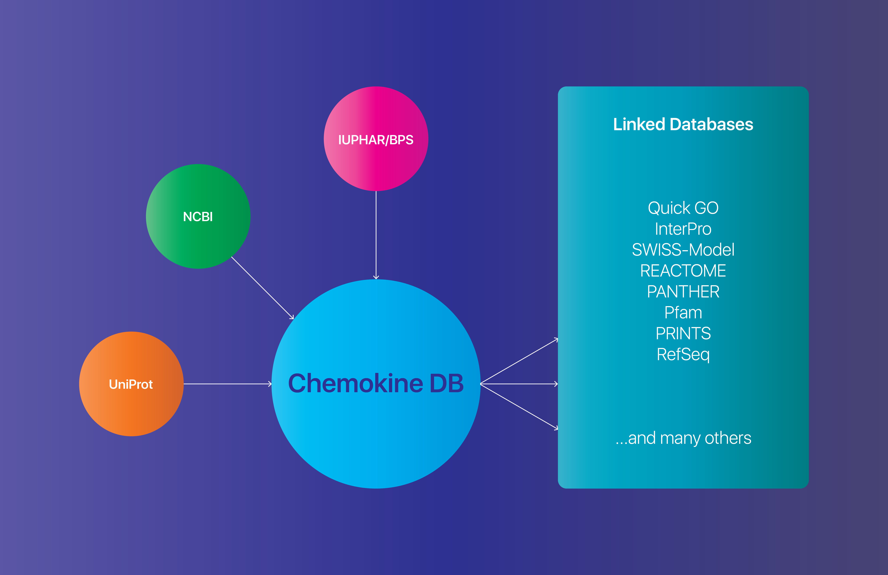

The Chemokine DB is a comprehensive resource of chemokines and chemokine receptors that provides researchers with detailed information including taxonomy, nomenclature, structure, physiological function, tissue information, and phenotype. The data presented here is collected from previously conducted experiments and analysis from public databases: IUPHAR/BPS, UniGene, and UniProt. We also link to a number of databases extending the reach of the application and making it easier for the researcher to retrieve and review information.
Chemokines are a small family of cell-secreted proteins involved in directly signaling nearby cells through chemotaxis. Four main families exist (CC, CXC, CX3C and XC). Chemokines interact with neighboring cells through G-protein coupled receptors (GPCRs) and are named based on the type of chemokines with which it interacts. The GPCR in turn communicates with the rest of the cell by way of signal transduction mediated by a G-protein. Understanding the inter-relationships between chemokines, species and chemokine receptors is critical in understanding the role in human health and disease, and in drug development.
A comprehensive review of published literature is insufficient to obtain the latest chemokine-related information as contributions to the field occur very frequently. As an alternative, researchers consult several different databases like UniProt, NCBI UniGene or the IUPHAR/BPS Guide to PHARMACOLOGY IUPHAR/BPS to collect the most recent gene, protein and receptor-ligand information. To simplify the access to the latest information in the chemokine and chemokine receptor field, we have developed Chemokine DB.
Our goals are to:Currently, our database contains:
The Chemokine DB is joint effort between the Bioinformatics and Computational Bioscience Branch (BCBB) and the Molecular Signaling Section, Laboratory of Molecular Immunology at the National Institute of Allergy and Infectious Disease (NIAID) at the National Institutes of Health (NIH), Bethesda, MD.
If you would like more information about ChemokineDB or if you have questions or comments, please contact us at chemokinedb@niaid.nih.gov